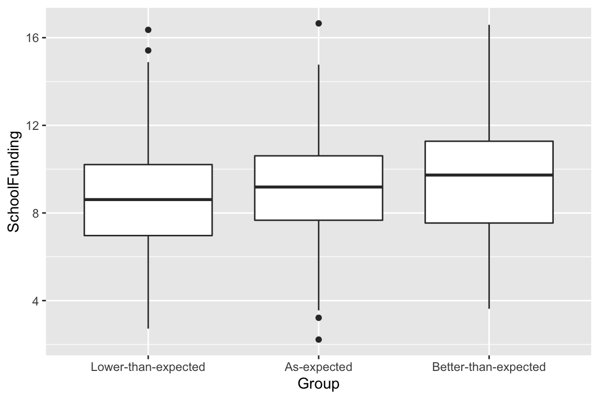

Summarizing Data
Introduction
This is a tutorial to accompany Lab 1, providing the needed code for running your analyses as well as doing some data wrangling. Data for this tutorial are from your textbook’s eResources (Kamden & Mwavita) and can be accessed here:[insert hyperlink] .
Packages used in this tutorial include:
library(needs)
library(tidyverse)
library(rio)
library(here)
library(knitr)
library(kableExtra)
library(misty)
library(janitor)
library(rstatix)
library(psych)Importing the Data
Installing the needs Package
- Can install packages and load them
- No longer need
install.packages()andlibrary() - It will ask if you would like to load it every time RStudio opens. Select yes.
install.packages("needs")Normally we would use the import() function to import our data. However, with the SPSS .sav files we don’t get factor labels.
data_import <- import(here("kamden-mwavita_data/one-way ANOVA - Fischer et al.sav"))
head(data_import)## SchoolFunding AdministratorSupport Group
## 1 6.777857 2.765169 1
## 2 4.920581 2.476562 1
## 3 10.292754 5.950275 1
## 4 8.024894 7.691846 1
## 5 8.418270 4.319460 1
## 6 10.063933 6.092292 1Notice how we have 1s down the group column. Also, the variable labels and values are not optimized for working in R, which is case sensitive and doesn’t do well with spaces.
The Solution
For now, when working with .sav files we will use the read.sav() function from the misty package. use.value.labels = TRUE tells it to use the labels as the cell values.
needs(misty)
l1_data <- misty::read.sav(here("kamden-mwavita_data/one-way ANOVA - Fischer et al.sav"), use.value.labels = TRUE) %>%
clean_names()
head(l1_data)## school_funding administrator_support group
## 1 6.777857 2.765169 Lower-than-expected
## 2 4.920581 2.476562 Lower-than-expected
## 3 10.292754 5.950275 Lower-than-expected
## 4 8.024894 7.691846 Lower-than-expected
## 5 8.418270 4.319460 Lower-than-expected
## 6 10.063933 6.092292 Lower-than-expectedChecking The Assumptions of ANOVA
In addition to requiring that the response variable (or dependent variable) must be measured on a continuous scale, there are three assumptions that should be met before proceeding with ANOVA:
- Homogeneity of variance: The variance between the batches should be similar.
- Independence of observations: Observations should be independent of one another.
- Normality: The distribution of values within each group should be normally distributed. If a transformation is applied to the data, it should be applied to all batches. Note that the distribution of values for all combined batches need not be normally distributed.
Descriptive Statistics
Make sure the psych package is installed and loaded:
needs(psych)describe() from the psych package is one of the more popular functions for descriptive statistics.
describe(data)Independence of Observations
- Do participants cross groups?
- We know this if we know the study design
- In this study, each student experienced one and only one lecture
Normality
- We can check the skew and kurtosis values from our
describe()output. - 0 ± 2 is a good rule of thumb for a tenable assumption of normality.
- group is a categorical variable, so skew and kurtosis can be ignored.
Shapiro’s test of Normality
We can also provide some empirical evidence to support the assumption of normality using shapiro.test() function.
shapiro.test(l1_data$school_funding)Visual Inspection for Normality
- For the most part, plots will be wrapped using the
ggplot()function.
Histograms
ggplot(data = l1_data, aes(x = school_funding)) +
geom_histogram()aes()refers to aesthetics. What are the variables we want represented in our plots? Since we just want counts of a single continuous variable, we just need to specify ourx(i.e.,x = group).
ggplot(data = l1_data, aes(x = school_funding)) +
geom_histogram()
Boxplot
- To get boxplots, we just substitute
geom_histogram()forgeom_boxplot()and modify our aesthetics.
ggplot(data = l1_data, aes(x = group, y = school_funding)) +
geom_boxplot()
Homogeneity of Variance
Levene’s Test
Homogeneity test is a separate analysis that we can conduct using the car package’s leveneTest() function. The formula is the same as for the ANOVA we want to run. Specify center = "mean" (function’s default is median).
needs(car)
car::leveneTest(school_funding ~ group, data = l1_data, center = "mean")## Levene's Test for Homogeneity of Variance (center = "mean")
## Df F value Pr(>F)
## group 2 2.0602 0.1283
## 635Our significant result shows error variance around the mean is equal across groups.
Computing the F-Ratio
Data wrangling
As it stands, our data are in a long format, where each observation has a row. This works for many uses, such as calculating our total sum of squares; however, we need the data to be in a wide format to calculate within group variance for each group. We can do this is in just a few lines of code using the spread() function (from tidyr within tidyverse packages). This function takes values from a column and turns them into column labels, thus widening our data. In this example, we also use the select() function to keep columns 2-4, as we are not interested in examining the first column in the matrix. Lastly, we call on the clean_names() function again, to reformat the newly made columns into our new data frame, df_wide.
df_wide <- spread(l1_data, group, school_funding) %>%
select(2:4) %>%
clean_names()
head(df_wide)## lower_than_expected as_expected better_than_expected
## 1 NA NA 16.5892
## 2 NA 9.916529 NA
## 3 NA 12.759629 NA
## 4 NA 4.316976 NA
## 5 NA 8.792685 NA
## 6 NA 9.911427 NACalculating between and within group variances
# calculating total sum of squares (SST)
SST <- sum( (l1_data$school_funding - mean(l1_data$school_funding))^2 )# calculating within group variance for each group
SSW.1 <- (df_wide$lower_than_expected - mean(df_wide$lower_than_expected, na.rm = T))^2
SSW.2 <- (df_wide$as_expected - mean(df_wide$as_expected, na.rm = T))^2
SSW.3 <- (df_wide$better_than_expected - mean(df_wide$better_than_expected, na.rm = T))^2
# calculating within group sum of squares (SSW)
SSW <- sum(SSW.1, SSW.2, SSW.3, na.rm = T)
# calculating between group sum of squares (SSB)
SSB <- SST-SSW# calculating mean between (MSB) and within (MSB) squares
MSB <- SSB/2 # (k - 1) or 2 degrees of freedom
MSW <- SSW/635 # (n - k) or 20 degrees of freedomF-ratio
# calculating F-ratio
Fratio <- MSB/MSW
Fratio## [1] 4.498838# p-value using the F-ratio
pf(Fratio, 2, 635, lower.tail=FALSE)## [1] 0.01147869